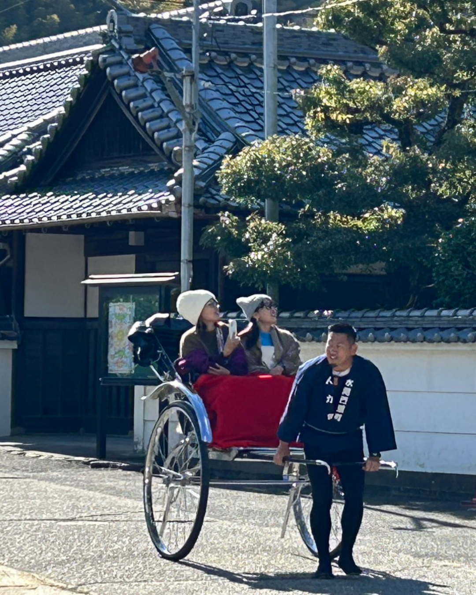
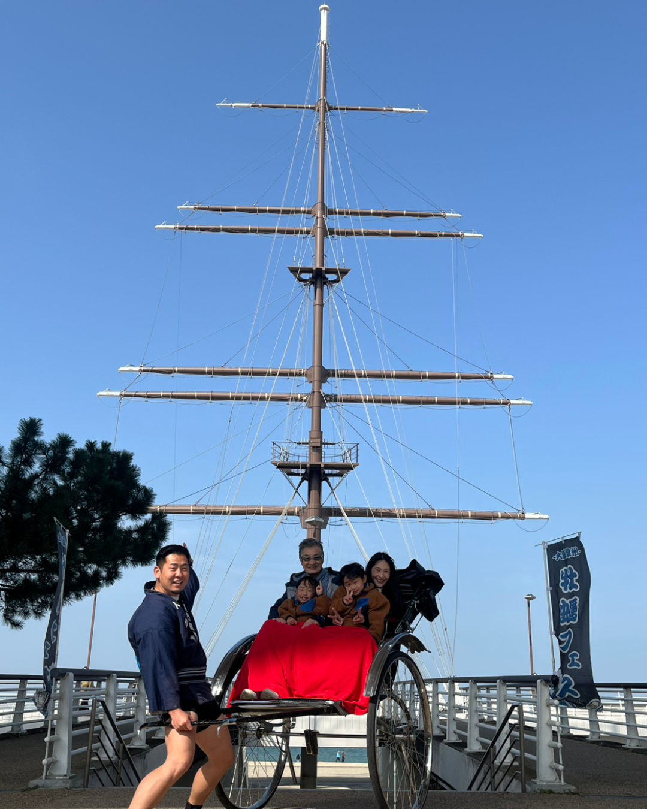
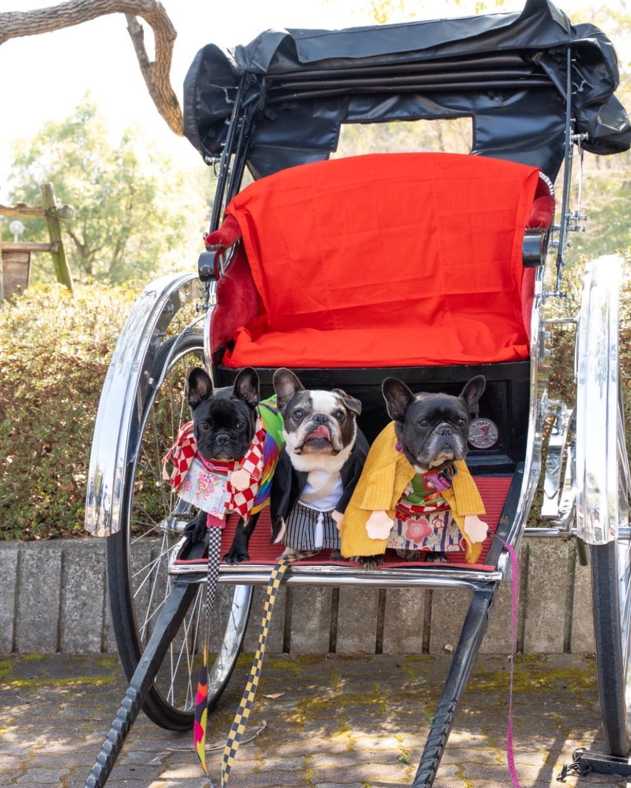

観光ではなく、体験。
About Makotoya
他にはない人力車の使い方を。
全国の観光地には、
名所を巡る人力車があります。
しかしこの町の人力車は、
少し違います。
名所を巡るためではなく、
思い出を形に残すための人力車。
水間門前町を活性化するため、
誠屋は生まれました。
移動ではなく、時間。
記念日を残す人力車。
Experience
誠屋でできること
人力車体験
観光地の人力車のように
長いコースを巡るのではなく、
気軽に人力車を体験できるのが
誠屋の特徴です。
記念日フォトプラン
誕生日、結婚記念日、
卒業・入学など節目の日を
形に残すフォトプランです。
写真だけでなく、
余白のあるアルバムや
アートフォトとして残せます。
出張サービス
イベントや結婚式など、
さまざまな場所への
出張にも対応しています。
人力車体験や記念撮影で、
特別な一日を演出します。
RICKSHAW EXPERIENCE RATES
人力車体験料金
誠屋の人力車は、15分から体験できます。
ゆっくり水間コース
3,000円 （約15分）
迷ったら、これ。
街道を抜けて、水間の空気を
ちょうどよく楽しめるコースです。
（水間寺 → 水間観音駅 → 水間寺）
しずかな川沿いコース
4,000円 （約20分）
自然を感じながら、
少しだけ静かな時間を。
会話がなくても、
心地よいコースです。
（水間寺 → 秬谷川沿い → 水間寺）
たっぷり水間コース
6,000円 （約35分）
山も、街も、駅も。
水間門前町をたっぷり巡る
一番贅沢な体験です。
（水間寺 → 秬谷川 → 水間観音駅 → 水間寺）
ご利用について
・大人2名まで乗車可能です
・小学生未満のお子さまは膝の上で乗車できます
思い出を、形に残す。
記念日フォトプランや
動画撮影プランもご用意しています。

Gallery
体験の風景




Your Rickshaw Experience
ご利用の流れ
気軽に相談
LINE・電話・DMで
日程や人数をご相談ください。
日程が決まっていなくても
大丈夫です。
プランを決める
人力車体験か、
記念日フォトプランかなど
目的に合わせて内容を
一緒に決めていきます。
体験スタート
水間寺周辺で集合し、人力車体験や
撮影を ゆっくり楽しめます。
よくあるご質問
FAQ
15分から体験できる人力車体験や、卒業・結婚記念日・誕生日など
節目の日を形に残すフォトプランをご利用いただけます。
電話、LINE、InstagramのDMから受け付けています。日程、人数、希望内容が分かると案内がスムーズです。
状況次第で対応できる場合がありますが、先約や準備の都合があるため事前連絡を推奨しています。
撮影プランの詳細は専用のLPにまとめています。このページ上部や途中の「LPを見る」から確認できます。
水間寺周辺が拠点です。詳細は下のアクセス欄とGoogleマップをご確認ください。
アクセス
Access
誠屋 | 水間門前町 人力車
- 場所
- 水間門前町
- 最寄り
-
水間鉄道「水間観音駅」
南海本線「貝塚駅」から乗換で約15分 - 営業形態
- 事前予約制あり
- 営業時間
- 日程や内容に応じて相談対応